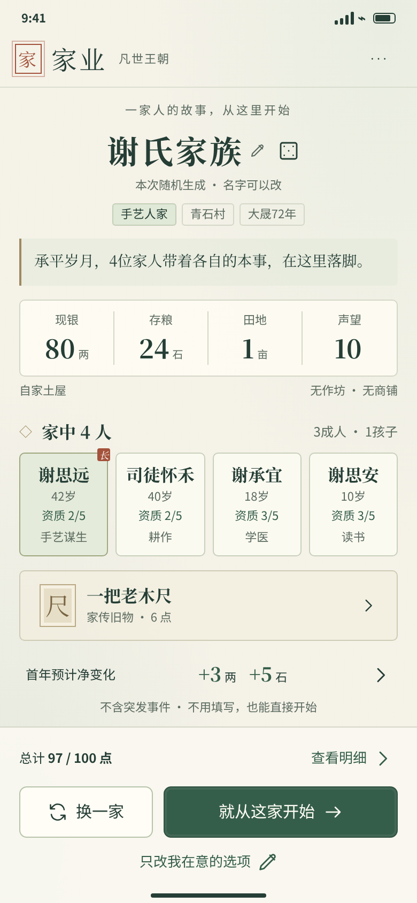

家业
手机设计稿 / STATIC DESIGN
逐屏实现说明
返回目录
8 份视觉资料 / 4 张独立竖屏
随机开局 · 一屏核对
UI-A01 · 静态结构稿
家族主页 · 家事与家谱
UI-C01 · 静态结构稿
人物详情 · 概况与安排
UI-C03 · 静态结构稿
事件面板 · 决定与后续
UI-D02 · 静态结构稿
最新手机关键界面 · 综合概念稿
BOARD-LATEST · 生成式概念稿
随机开局 · 多状态板
BOARD-A · 静态状态板
用户提供的同类 UI 参考
REFERENCE · 外部布局参考
早期流程稿 · 已归档
ARCHIVE · 已被后续修订
静态结构稿
这是静态稿浏览器，画面内按钮不可操作。
数字与人物为示例；下面的宽度按钮只缩放图片，不代表已完成手机适配。
360 展示
390 展示
430 展示
← 上一张
下一张 →
打开原图 ↗

最新综合海报用于美术和模块方向；独立竖屏稿用于结构参考。固定姓氏、图片示例数值、未注册信物都不得写死到游戏。
设计稿差异与使用边界
打开旧版 V5 互动基线